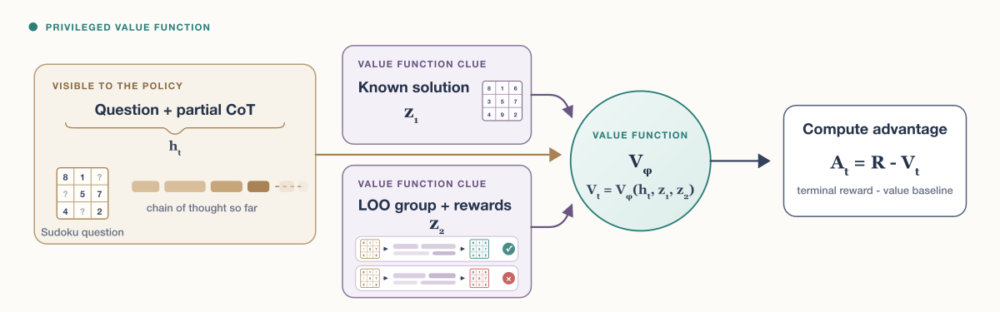
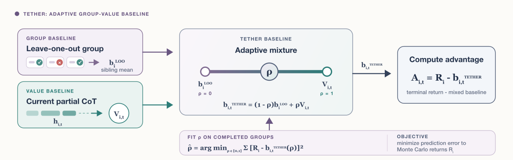

Le Critique: Privileged Value Functions for LLM RL (PVF + TETHER)
TL;DR
- Le Critique (Venkatraman, Dinot, Aitchison — Mistral AI / Mila / Université de Montréal, arXiv 2608.16739) argues value functions have been prematurely written off in LLM RL and proposes two fixes: Privileged Value Functions (PVF) — condition the critic on task-relevant information the policy never sees (reference solutions, the other group rollouts and their rewards, verifier rubrics) — which sharpens value estimates without biasing the policy gradient.
- TETHER removes the group-vs-critic dilemma: an adaptive baseline \(b = (1-\rho)\,b^{\mathrm{LOO}} + \rho\,V_{\phi}\) whose mixing coefficient \(\rho\) is refit every batch by least squares against observed returns — so training leans on the group mean while the critic is bad and shifts weight to the critic as it learns.
- Across Reasoning Gym, CodeIO, Sudoku, and MiniF2F, PVF beats the ordinary value-function baseline in all four settings and TETHER beats it in all four as well, staying competitive with (or better than) mean-baseline GRPO — while opening the door to critic advantages GRPO can't offer: token-level credit, no group-size requirement, and no straggler-blocking.
Why this matters
The entire post-GRPO era of LLM RL is built on a workaround. Group-relative baselines (GRPO, RLOO) exist because learned critics were unreliable for sparse-reward reasoning tasks: a value head that must predict final returns from a partial chain of thought is being asked to solve much of the task itself. So the field settled for sequence-level advantages from K parallel rollouts — paying for it with big rollout groups, no token-level credit assignment, and synchronous batches blocked by the slowest straggler rollout (which also increases off-policyness in async setups). The paper's framing is that this trade was made when critics were weak, and nobody has seriously revisited the exchange rate.
The core observation is almost embarrassingly simple once stated: the critic does not have to play by the policy's rules. The policy must not see the answer; the value function may. Nothing in the policy-gradient math requires the baseline to be computed from policy-visible information only — it requires the baseline to be independent of the sampled action given the state. That asymmetry is free variance reduction that group-relative methods have been leaving on the table. For this reading list, this is the credit-assignment sibling of rubric-as-privileged-information reward shaping — but injected through the baseline, where it provably cannot bias the objective.
The core idea
Start from the standard policy gradient with a baseline. The estimator is
where \(h_{i,t}\) is the policy state (prompt + partial response) of rollout \(i\) at token \(t\), \(y_{i,t}\) the sampled token, \(\widehat{A}_{i,t}\) the advantage estimate, and \(w_{i,t}\) an importance weight. A baseline \(b\) leaves this unbiased as long as
— i.e., the baseline may condition on any extra context \(z_{i,t}\), provided \(z\) is independent of the token being scored given the state. Ground-truth answers, gold patches, rubrics, and the other \(K{-}1\) rollouts in the group all satisfy this. So define the privileged value function
Conditioning can only help, by the law of total variance:

Figure 1 from the paper: with policy state \(h_t\) (a Sudoku question plus intermediate chain of thought), the privileged value function additionally receives context unavailable to the policy — a known reference solution \(z_1\), or leave-one-out group trajectories with rewards \(z_2\) — turning value estimation from "solve the problem" into "check progress against the answer."
The paper's second observation reframes GRPO itself: the leave-one-out baseline \(b_{i}^{\mathrm{LOO}}=\frac{1}{K-1}\sum_{j\neq i}R_{j}\) is already a training-free privileged value function conditioned only on the group's rewards:
That insight motivates TETHER: if LOO and a learned critic are both (privileged) value estimators with complementary failure modes, don't choose — interpolate, and let the data set the ratio.
How it works
PVF in practice. The critic \(V_\phi\) is trained to regress observed returns from (state, privileged context) pairs; advantages are Monte Carlo (\(R_i - V_\phi\)), so the privileged signal reaches the policy only through baseline subtraction — it cannot leak answers into the policy. Three families of privileged input: (1) reference solutions — oracle answers, proof sketches, gold patches — which reduce value prediction to "is this trajectory progressing toward a known end state?"; (2) leave-one-out group context — the other \(K{-}1\) responses and their rewards, an in-context aggregation prompt that works even without gold answers; (3) miscellaneous — verifier rubrics or detailed task specs the policy doesn't get.
TETHER. With \(V_{i,t}=V_{\phi}(h_{i,t})\) the learned token-level value:
\(\rho=0\) recovers the LOO group advantage, \(\rho=1\) the token-level value advantage. The coefficient is fit each step by least squares against observed returns — \(\widehat{\rho}_{k}=\arg\min_{\rho}\sum_{(i,t)\in\mathcal{B}_{k}}\big(R_{i}-b^{\textsc{Tether}}_{i,t}(\rho)\big)^{2}\) — then EMA-smoothed: \(\rho_{k}=d\,\rho_{k-1}+(1-d)\,\widehat{\rho}_{k}\). Crucially, a batch never uses a coefficient fitted on its own returns (advantages are frozen with \(\rho_{k-1}\) before \(\widehat{\rho}_k\) is fit), avoiding a subtle correlation bias.

Figure 2 from the paper: TETHER combines the group leave-one-out mean and token-level values with an adaptive mixture ratio \(\rho\), fit to minimize Monte Carlo return-prediction error.
TETHER training step (condensed from the paper, incl. Appendix B infra):
# async: a serving-copy value evaluator scores partial responses;
# a value trainer learns from a FIFO replay buffer in parallel
rho <- 0 # start trusting the group baseline
for each policy step k:
sample batch B_k: K rollouts per prompt, terminal rewards R_i
V[i,t] <- value evaluator predictions for every token prefix
b_loo[i] <- mean of other K-1 rewards in each group
# freeze advantages with the OLD coefficient
A[i,t] <- R_i - ((1-rho) * b_loo[i] + rho * V[i,t])
update policy with A
# only now fit the new coefficient on this batch's returns
rho_hat <- argmin_rho sum (R_i - b_tether(rho))^2 # cheap least squares
rho <- d * rho + (1-d) * rho_hat # EMA smoothing
push trajectories to FIFO replay; value trainer updates V_phi async
The infrastructure appendix matters: the value function trains asynchronously on a replay buffer with a warmup phase before policy training begins — the critic is a separate model with its own trainer, not a value head bolted onto the policy.
Results
Four PVF experiments across three environments: Reasoning Gym (procedural reasoning mixture; PVF sees the ground-truth answer; tested at \(K{=}1\) and \(K{=}8\)), CodeIO (program input/output prediction; PVF sees the other \(K{-}1{=}3\) responses and their returns), and Sudoku (multi-turn, one cell per turn, 32k-token responses; PVF sees the solved grid). Privileged conditioning improves over the ordinary value function in all four settings (Figures 3 and 7), and the paper shows PVF explains substantially more return variance than an unprivileged critic. Notably the \(K{=}1\) Reasoning Gym setting has no group baseline at all — pure critic RL, made viable by privilege.
TETHER experiments add MiniF2F (formal theorem proving): TETHER beats the plain value-function baseline in all four tasks and is competitive with or better than mean-baseline GRPO — with one honest caveat: on Sudoku it does not fully recover the group baseline's performance, only substantially mitigates the plain critic's degradation. The \(\rho\) dynamics (Figure 6) are the most instructive plot: every run starts at \(\rho=0\) (trust the group), then drifts up as the critic starts explaining return variance — and the convergence value is strongly task-dependent. Sudoku converges to the largest critic weight despite the critic performing worst there standalone, which the authors read as: a badly-fit critic early in training does compounding damage, and TETHER's contribution is precisely to shield the policy during that phase.
How it connects
This is the most principled entry yet in this tracker's credit-assignment cluster. TRACE (turn-level rewards) and the rubric-generated-feedback-as-privileged-information entry both densify sparse rewards using training-time-only information; Le Critique moves the same trick into the baseline, where the unbiasedness condition \(z \perp y \mid h\) makes it provably safe rather than heuristic reward shaping. The reframing of LOO-GRPO as a training-free PVF also puts the TEMPO value-estimation entry and HL-Gauss PPO (categorical value losses) into one family: everything is a value estimator; the only questions are what it conditions on and how it is trained. The straggler/asynchrony motivation links directly to GLM-5.3's SAO (single-rollout async RL with a value model, added to this tracker the same day) — two independent groups concluding that escaping group barriers requires rehabilitating critics. And the "privileged critic with hidden context" pattern is the RL-side mirror of weak-to-strong OPD's teacher-side information asymmetry. The TETHER idea itself echoes the paper's own citation of EVPO (App. C) — but the adaptive, per-batch refit of \(\rho\) is the new part.
Critical take
The experiments are honest but small — the authors say so themselves ("Small-scale experiments," Section 8), and no absolute model sizes or downstream benchmark numbers appear in the main results, only training-reward curves (mean raw reward over the final 50 steps). That leaves the key production question open: does PVF's variance reduction translate into wall-clock or sample-efficiency wins at the scale where GRPO groups are genuinely expensive? The infra cost is also real — a separate critic model, its own trainer, replay buffer, and serving copy — which is exactly the engineering burden that killed critics the first time; TETHER lowers the risk of adopting a critic but not its price. The Sudoku result cuts both ways: TETHER never dips below VF, but the fact that Mean still wins there shows the adaptive mixture can't fully compensate for a critic that's fundamentally struggling on long-horizon multi-turn value prediction. Finally, the strongest claimed benefits — token-level credit, straggler-free async, small groups — are mostly argued rather than ablated head-to-head at scale; the K=1 Reasoning Gym run is the tantalizing exception. Mistral publishing this suggests the internal version runs bigger (inferred from the thread — verify in the paper).
If you remember three things
- The critic may cheat; the policy may not. Any context independent of the sampled token given the state — gold answers, sibling rollouts, rubrics — can condition the baseline without biasing the policy gradient, and conditioning provably never increases variance.
- GRPO's LOO baseline is already a privileged value function — a training-free one conditioned on group rewards. Once you see that, "group vs. critic" stops being a binary choice.
- TETHER = trust calibration by least squares: \(b=(1-\rho)b^{\mathrm{LOO}}+\rho V_\phi\) with \(\rho\) refit each batch against observed returns — group baseline while the critic is cold, critic as it warms up, and never worse than the worst of the two by much.